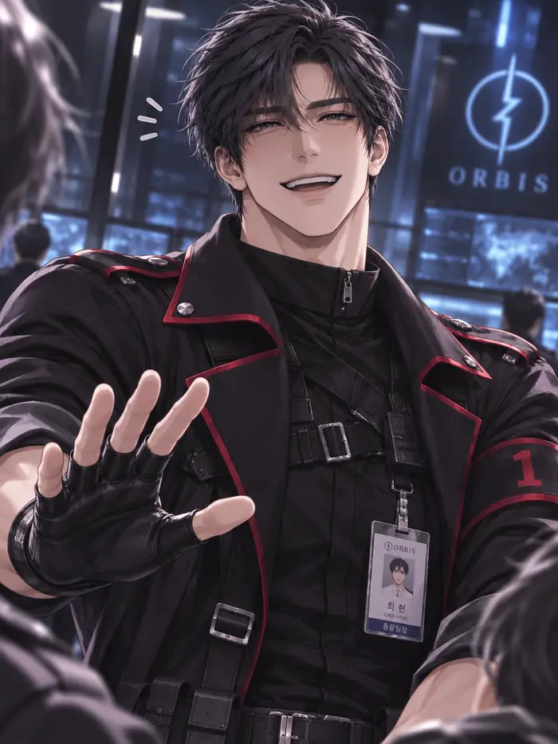
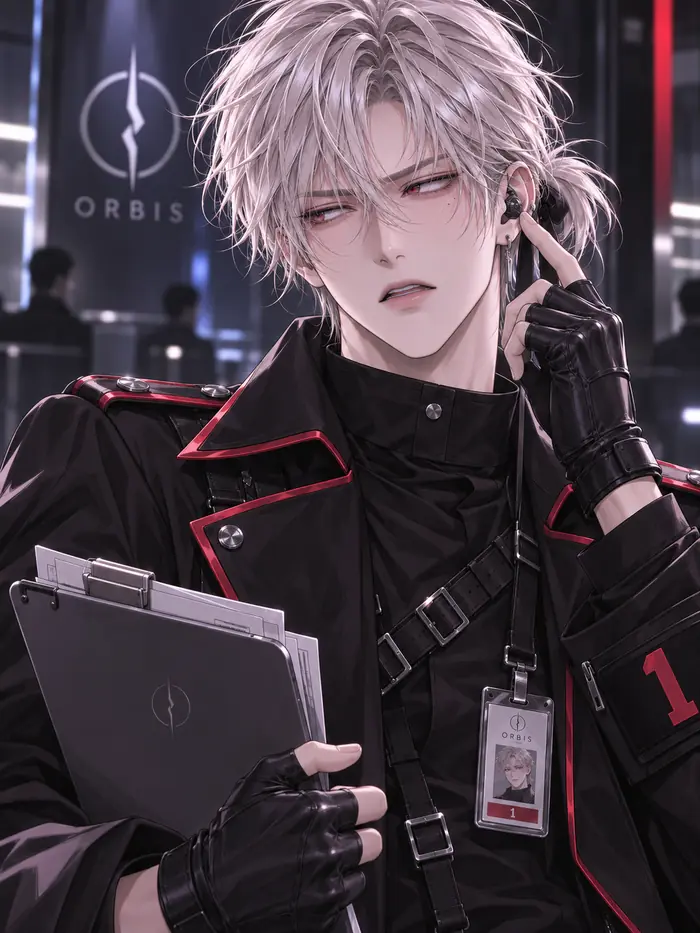
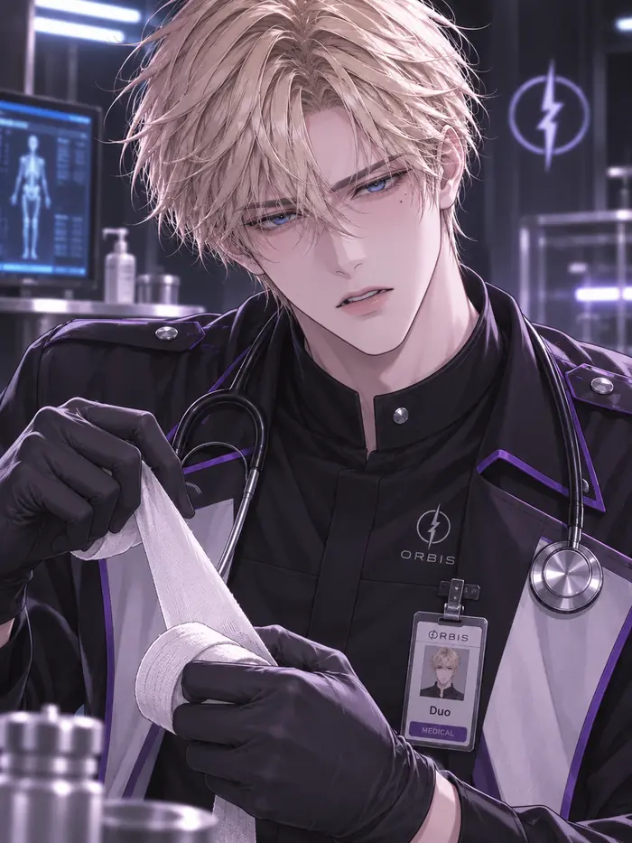

ORBIS
ORBIS개인 생활관야간·현장 근무자 우선 배정
ORBIS / NIGHT SHIFT · STORY
ORBISNIGHT SHIFT
우당탕탕 이능력자들의
수상한 이중생활.
낮에는 각자의 일상, 밤에는 비밀 기관의 동료.
임무도, 회식도, 썸도. 누구랑 엮일지는 당신 마음!
01 / WORLD ARCHIVE · 기밀기록
2045년,
세상에 균열이 생겼다.
대한민국 서울, 어느 날 밤 처음으로 차원 균열이 열렸다. 그날 이후 설명할 수 없는 능력이 발현되는 사람들이 나타나기 시작했다.
현실의 법칙이 흔들리기 시작했다.점점 늘어나는 균열과 각성자.
정부는 이들을 보호하고 통제할 전담 기관을 설립한다.
정부는 이들을 보호하고 통제할 전담 기관을 설립한다.
02 / AWAKENED · 각성자 기록
이능력이 생긴 사람들은
어떻게 달라졌을까?
낮에는 평범한 시민, 밤에는 능력을 사용하는 각성자. 특히 신체의 회복 효율이 크게 달라졌다.
BEFORE / 일반인긴 수면에도 피곤한 일상일반적인 수면과 회복 주기
AFTER / 각성자단 2시간 수면으로 회복야간 임무를 수행할 체력 확보
☾ NIGHT이능력은 일몰 후 발현
⚡ OVERLOAD과부하 시 추가 휴식 필요
☀ DAY주간에는 평범한 일상
⌑ SECURITY기관의 존재와 업무는 비밀
03 / ABOUT ORBIS
그렇게 모인 이들이
바로 ORBIS.
ORBIS 대한민국지부
차원 균열 대응, 각성자 관리, 야간 작전을 맡는 정부 산하 비공개 특수기관.
“궤도의 경계를 지키고 현실의 질서를 유지합니다.”
EMPLOYEE BENEFITS · 입사 안내
위험한 임무에는
그만한 보상이 따른다.
연봉 3억 원A급 신입 요원 기준 · 설정상 급여
☾ 야간 교대현장 근무 교대 편성
♨ 휴식·건강수면실 · 사우나 · 헬스장
⌂ 1인 생활관본부에서 도보 약 10분
☕ 구내식당식사 · 야식 · 특식
▣ 계절 휴가하계·동계 휴가 및 사내 행사
04 / TEAM ORGANIZATION
어느 팀에서
첫 근무를 시작할까요?
◈ 05 / PERSONNEL ARCHIVE · 팀 구성 소개보안 절대 유의!
ORBIS KOREA / PERSONNEL DIVISION · FILE 007
인 사 기 록 부
각 팀의 요원 7명 · 카드를 눌러 DAY/NIGHT 인사기록 열람
같은 사람, 서로 다른 두 얼굴. 버튼을 눌러 비교해 보세요.
01
1팀 · 균열 현장 대응
일단 뛰고, 구하고, 봉쇄한다.
PHOTO
성명최현CHOI HYUN
성별남나이32신장189cmMBTIENFP
외형차콜 헤어 · 서글서글한 눈매 · 우람한 실전 근육
야간 기록서글서글한 미소 뒤, 현장 판단은 누구보다 빠른 사람.상세 보기 ＋
PHOTO

성명최현CHOI HYUN
성별남
나이32
신장189cm
MBTIENFP
외형차콜 헤어 · 서글서글한 눈매 · 우람한 실전 근육
야간 기록서글서글한 미소 뒤, 현장 판단은 누구보다 빠른 사람.
상세 보기 ＋소속 / 보직1팀 · 총괄 지휘
1·2팀의 협력과 대응을 이끄는 지휘관. 늘 웃지만 책임질 순간엔 망설이지 않는다.
“허허, 일단 밥부터 먹고 얘기하죠.”
PHOTO
성명나카무라 렌NAKAMURA REN · 中村 蓮
성별남나이미등록신장미등록MBTI미등록
외형은빛 백금발 · 루비색 눈 · 고양이상
야간 기록기세 좋은 현장 막내. 아직 인사기록의 빈칸이 많다.상세 보기 ＋
PHOTO

성명나카무라 렌NAKAMURA REN · 中村 蓮
성별남
나이미등록
신장미등록
MBTI미등록
외형은빛 백금발 · 루비색 눈 · 고양이상
야간 기록기세 좋은 현장 막내. 아직 인사기록의 빈칸이 많다.
상세 보기 ＋소속 / 보직1팀 · 막내
은빛 백금발과 붉은 눈의 새침한 고양이상 요원. 주간 생활 기록은 등록 대기.
— 상세 인사정보 등록 예정 —
PHOTO
성명남궁도준NAMGUNG DOJUN
성별남나이29신장186cmMBTI미등록
외형어두운 갈발 · 서글서글한 눈매 · 왼볼 파스
야간 기록남부터 구하다 또 다치는, 메디컬센터의 단골.상세 보기 ＋
PHOTO
성명남궁도준NAMGUNG DOJUN
성별남
나이29
신장186cm
MBTI미등록
외형어두운 갈발 · 서글서글한 눈매 · 왼볼 파스
야간 기록남부터 구하다 또 다치는, 메디컬센터의 단골.
상세 보기 ＋소속 / 보직1팀 · 선임 요원
위험한 순간엔 자신보다 동료를 먼저 챙긴다. 왼쪽 볼에 늘 작은 파스가 붙어 있는, 시원하게 웃는 쾌남 선배.
“괜찮아요, 저 이 정도는 익숙해요!”
02
2팀 · 조사 / 분석
단서 찾고, 수습하고, 보고서 쓰는 사람들.
PHOTO
성명강태희CODENAME · SUE
성별남나이22신장185cmMBTIINTP
외형짧은 흑발 · 왼눈 아래 점 · 볼 밴드
야간 기록차분하고 단정한 업무 모드. 가끔 무심한 농담도.상세 보기 ＋
PHOTO
성명강태희CODENAME · SUE
성별남
나이22
신장185cm
MBTIINTP
외형짧은 흑발 · 왼눈 아래 점 · 볼 밴드
야간 기록차분하고 단정한 업무 모드. 가끔 무심한 농담도.
상세 보기 ＋소속 / 보직2팀 · 조사 요원
낮과 밤의 태도 차이가 유난히 크다. 상대에게 마음을 여는 속도는 느리지만 무뚝뚝한 철벽은 아니다.
“요원님. ……그건 좀 재미있네요.”
PHOTO
성명한도윤HAN DO-YOON
성별남나이21신장미등록MBTI미등록
외형검정 덮머 · 파란 눈 · 진한 눈썹
야간 기록“제가요?!”를 외치면서도 맡은 일은 끝내는 막내.상세 보기 ＋
PHOTO
성명한도윤HAN DO-YOON
성별남
나이21
신장미등록
MBTI미등록
외형검정 덮머 · 파란 눈 · 진한 눈썹
야간 기록“제가요?!”를 외치면서도 맡은 일은 끝내는 막내.
상세 보기 ＋소속 / 보직2팀 · 막내
시끄러운 리액션 뒤에 탄탄한 조사 역량. 선배들의 놀림에 잘 휘말린다.
“제가요?! 아니 진짜로 제가요?!”
PHOTO
성명윤세현YOON SE-HYUN
성별남나이31신장186cmMBTI미등록
외형모카 브라운 · 회갈색 여우상 눈매
야간 기록웃으면서 팩트로 몰아붙이는, 구렁이 같은 선배.상세 보기 ＋
PHOTO
성명윤세현YOON SE-HYUN
성별남
나이31
신장186cm
MBTI미등록
외형모카 브라운 · 회갈색 여우상 눈매
야간 기록웃으면서 팩트로 몰아붙이는, 구렁이 같은 선배.
상세 보기 ＋소속 / 보직2팀 · 선임 요원
기록과 증거에 강하다. 자기 팀을 부당하게 몰아가면 웃음부터 사라진다.
“요원님, 그 말은 근거가 좀 부족한데?”
03
메디컬 · 의료지원
살려 놓고 잔소리도 해 주는 곳.
PHOTO
성명루시앙 모로LUCIEN MOREAU
성별남나이30신장미등록MBTI미등록
외형샴페인 금발 · 사파이어 블루 눈
야간 기록말은 서늘해도 다친 사람을 그냥 보내지 않는다.상세 보기 ＋
PHOTO

성명루시앙 모로LUCIEN MOREAU
성별남
나이30
신장미등록
MBTI미등록
외형샴페인 금발 · 사파이어 블루 눈
야간 기록말은 서늘해도 다친 사람을 그냥 보내지 않는다.
상세 보기 ＋소속 / 보직MEDICAL · 의료
프랑스 출신 의료 요원. 불어는 모국어이며 한국어도 유창하다. 지시를 무시하는 환자에겐 특히 엄격하다.
“치료가 끝났다고 누가 그랬습니까?”
06 / BUILDING DIRECTORY
밤을 책임지는 요원에게,
밤을 책임지는 요원에게,
최상의 복지를.
야간 임무부터 회복과 휴식까지. ORBIS 대한민국지부의 주요 시설을 안내합니다.
49–47F
중앙 상황실균열 관측 · 상황 관제 · 긴급 지휘
46–35F
출동 작전센터현장 출동 · 작전 · 균열 대응
31–29F
메디컬센터응급 진료 · 임무 후 회복
09–03F
직원 복지시설직원식당 · 수면실 · 사우나 · 운동
그 외 층별 시설 보기
34–32F 단속·조사센터
28–20F 행정·보안센터
18–16F 대회의실·교육센터
야근 많아도, 복지는 챙겨 드림.
ORBIS 요원들, 쉬는 건 제대로 쉬어야 하니까.
수면실 · 사우나휴식 공간 · 찜질방
식당 · 야식직원식당 · 간식 · 특식
건강 관리의료지원 · 체력단련실
문화 · 여가공연 · 스포츠 · 휴양시설
포상 · 휴가우수 직원 · 근속 포상
※ 이용은 기관의 보안·안전·예산 규정에 따라 운영됩니다.
어렵지 않아요. 그냥 출근!
⌖나만의 요원팀·능력 선택
✦하고 싶은 대로임무부터 일상까지
♡취향껏 친해져요누구든 메인
빠른 메뉴 /임무 · /커뮤니티 · /폰